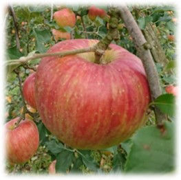

2022/07/17
信州・飯綱町の小さなりんご園、小山園です
りんご生産が盛んな信州。その北部に位置する人口約1万人の町である飯綱町も、おいしいりんごの産地として知られています。当園では長野県オリジナル品種を中心に14品種のりんごを栽培しています。 信州産のおいしいりんごを全国の皆様にお届けします!
飯綱産りんごがおいしい理由
寒暖の差で養分をためこむ
飯綱町は内陸性の気候のため気温の比較差が大きく、昼間は暑く夜間はぐっと冷え込みます。 飯綱町のりんごたちは、この寒暖差によって、養分をたっぷりため込み、濃厚で、甘味と酸味が絶妙なバランスをもつりんごになります。
年平均気温10度が締まったりんごを育てる
一般的に年平均気温10度前後がりんご栽培の適地といわれています。長野県最北の飯綱町倉井区の標高は約550 mと高く、平成26年の平均気温は10.9度。この気温がひき締まった果肉のりんごを育てています。やわらかくなりにくい飯綱産「ふじ」は、第22次南極観測隊のデザートとして贈られました。（飯綱町広報より）
雨少なく、お日様たっぷりで色づきがいい
りんごは降水量が比較的少なく、乾燥した地域が育成に適しているといわれています。飯綱町は、「雨少なく、お日様たっぷり」の地域。だから太陽の恵みをたっぷりとあびた、色付きのよいりんごを生み出しています。
種類もいろいろ
当園では、長野県オリジナル品種であるりんご3兄弟（秋映・シナノスイート・シナノゴールド）、シナノドルチェ、サンふじりんごを中心に栽培しています。その他に、ポケットサイズの新品種シナノプッチ（平成21年品種登録）、サンふじの前に収穫できる、シナノホッペ（平成23年品種登録）も収穫できます。

秋映
りんご3兄弟の長男。かためのぱりぱりした果肉で、香りが強く果汁たっぷりです。

シナノスイート
りんご3兄弟の次男。きれいな赤色の果皮で、名前の通り甘味が強くジューシーです。

シナノゴールド
りんご3兄弟の三男。黄色のりんごで、酸味と甘味が支えあったバランスのいい味です。